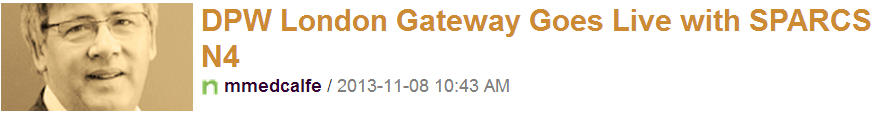

I'm happy to announce that DPW London Gateway successfully went live with SPARCS N4 and Kalmar ASCs on November 7, 2013.
I'd like to share with Navis
employees an email I received yesterday morning from Duncan Smith, Director of Professional Services Europe with details of the go-live.
It gives me great pleasure pleasure to announce that DPW London Gateway http://www.londongateway.com/ sucessfully went live with SPARCS N4 (version 2.5.2.1)
and Kalmar ASCs at around 00:05 am this morning with the first commercial lift from 58,000-tonne MOL Caledon on the SEAC service carrying fruit and wine from
South Africa. 198 units were discharged of which 17 reefers and there were 277 units on the load list.
Relations with DPW team where at all times outstanding and the term, “dream team”, though a much overused, is absolutely applicable to the Navis team
that worked on LGPL including both dedicated on site and the support which was given by both PM and development organizations in Oakland.
I would like to take this opportunity to thank all at Navis
and highlight a couple of names:
Judith Morton,
Mark Spellane,
Carlos Barbera,
Christopher Abrams,
Arturo Martinez,
Paul Dickson,
Knud Madsen,
Tom Bakker,
Sandeep Nevasekar,
Dale Shiozaki,
Sivan Mozes,
Dave Mills